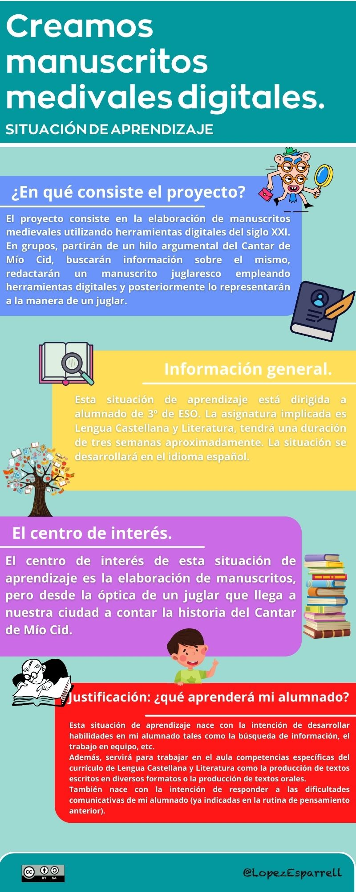

01. Información general sobre esta situación de aprendizaje.
Seguro que tienes muchas preguntas antes de iniciar el viaje que te propone esta situación de aprendizaje que te dispones a comenzar: ¿en qué consiste?, ¿qué voy a aprender?, ¿será interesante?, ¿será muy difícil?, etc.
Pues en esta infografía se resume todo. ¡Léela con mucha atención!
